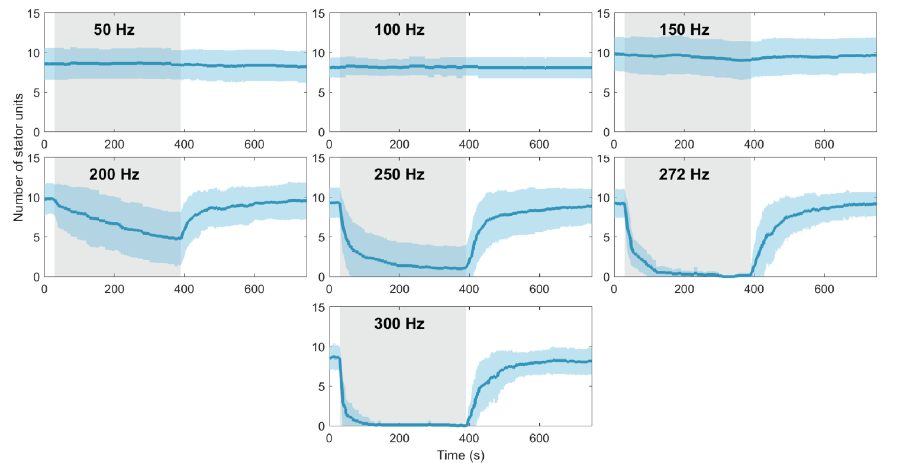
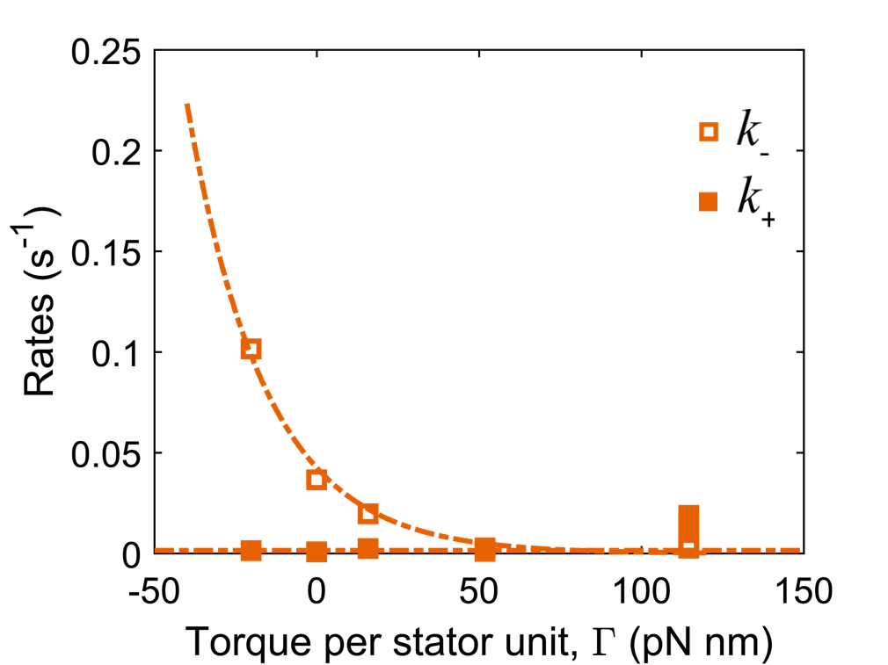
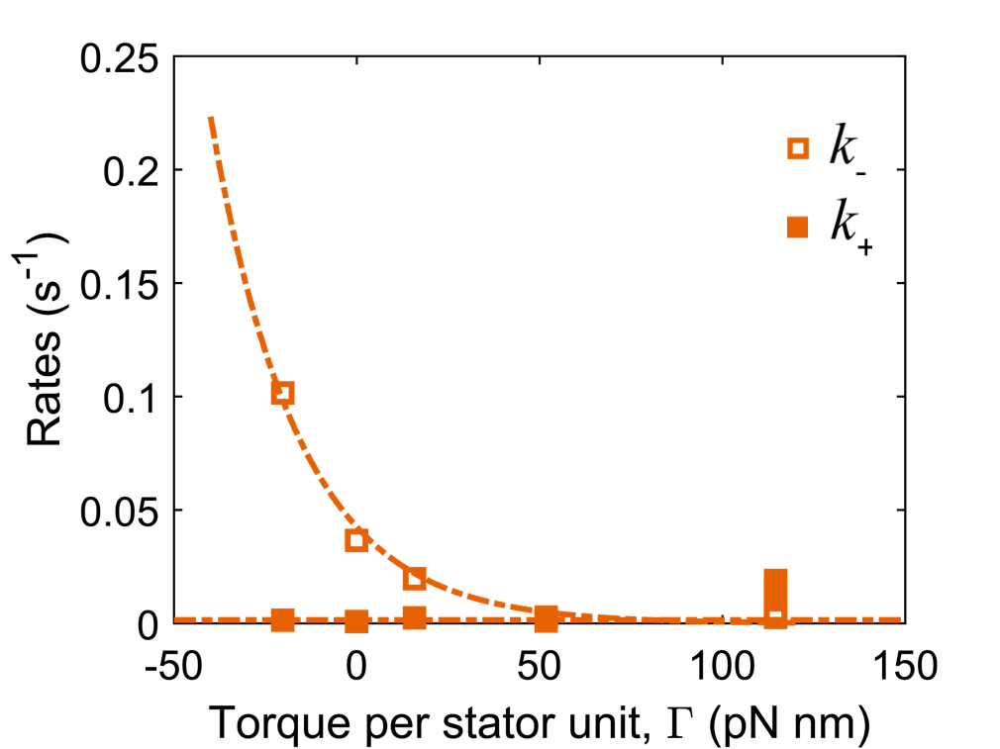

Artwork: Dan Nowakowski/Nicholas Taylor
Mechanobiology of stator remodeling in the bacterial flagellar motor
Mechanobiology of
stator remodeling in the bacterial flagellar motor
Does the bacterial
flagellar engine have an automatic gearshift?
Navish Wadhwa1, Yuhai Tu2, Howard C. Berg1
1Harvard University, 2IBM Research
slides: https://tinyurl.com/navish-aps
Bacteria swim by rotating helical flagella

Turner et al., J. Bacteriol., 2000
...Powered by a molecular engine
Nakamura and Minamino, Biomolecules, 2019
Santiveri et al., Cell, 2020
Leake et al., Nature, 2006
Automatic gearshift in cars allows the engine to adapt to changing terrains

How does the bacterial flagellar engine deal with changing loads?
We used electrorotation to control motor load


A change in load triggers stepwise changes in motor speed
Wadhwa et al., PNAS, 2019
The stator remodels in response to load change

Wadhwa et al., PNAS, 2019
Lele et al., PNAS, 2013
Nord et al., PNAS, 2017
How does it work?
We "tuned the knobs" to change the strength of the electrorotation torque
We extracted the on- and off-rates of stator unit binding
Wadhwa et al., PNAS, 2019
Off-rate decreases with the torque exerted by the stator units
 

The binding gets stronger at higher torque
A passive, biophysical mechanism of mechano-adaptation
We tested this model with torque “knockdown” experiments

Mechanosensitive remodeling is independent of the direction of rotation
Torque is the main parameter governing stator remodeling
Wadhwa et al., PNAS (in press), 2021
Cars and bacteria use different approaches
Cars adapt the transmission while bacteria adapt the engine itself
Summary
Bacterial motors adapts to changing loads by remodeling themselves.
Torque governs remodeling by tuning the binding kinetics.
Molecular machines are not static, fixed structures, but flexible, dynamics, and responsive.
Acknowledgements
Collaborators
Howard Berg (Harvard)
Yuhai Tu (IBM)
Rob Phillips (Caltech)
Ethan Garner (Harvard)
Nicholas Taylor (U. Copenhagen)
Marc Erhardt (Humboldt U.)
K99/R00: GM134124